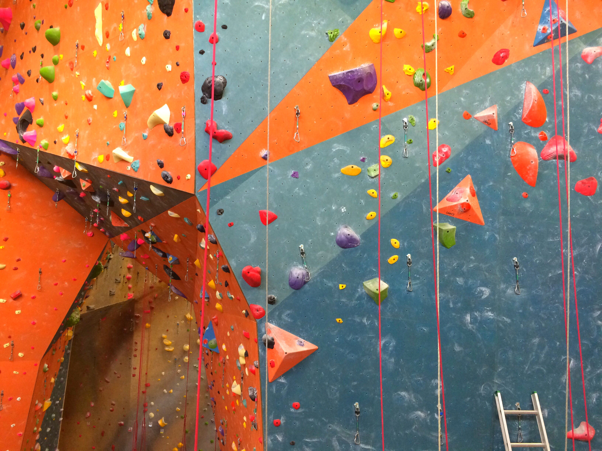

-
Coding:
This one is self explanatory but i enjoy coding and creating interesting programs.
-
Rock Climbing:

I have been rock climbing for around a year now and it is something my brother and friends got me into -
Playing the Trumpet:
I have been playing the trumpet for over 10 years and have been involved in many Honor Bands and also WMEA All-State. -
Gaming/ESports: (Click image for more information!)
I enjoy gaming a lot and also following esports